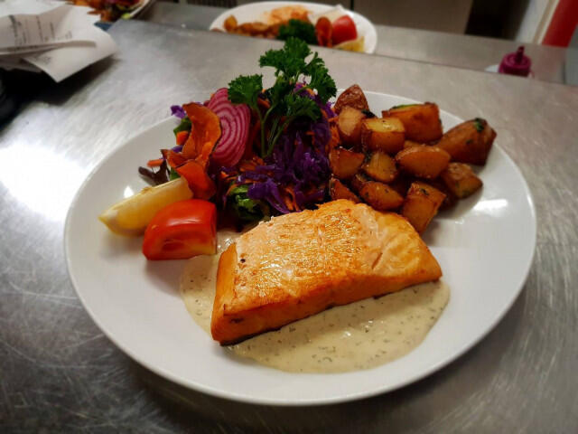
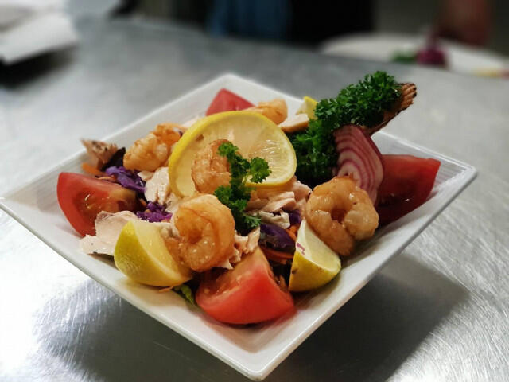
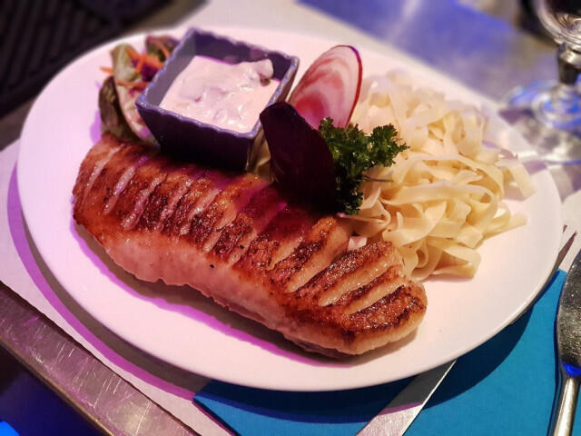

Brasserie · Centre-ville de Saint-Denis
Une adresse chaleureuse au cœur de Saint-Denis : cuisine maison au déjeuner et au dîner, belles assiettes et soirées entre amis.
Le Saint-Hub'
Installée en centre-ville, rue Victor Mac Auliffe, la Saint-Hubert Brasserie accueille jusqu'à 74 convives dans un établissement chaleureux et coloré, où toute l'équipe veille à ce que chacun se sente bien.
Karaoké dès 19h, puis France-Italie sur écran : le Saint-Hubert sait faire d'une soirée un vrai rendez-vous, où l'on vient chanter et vibrer ensemble.
À l'assiette



Photos de la fiche de la brasserie sur reunion.fr (Île de la Réunion Tourisme).
Ils en parlent
Une note moyenne de 4,3 sur 5 sur 408 avis Google : le Saint-Hub' a ses habitués.
Source : fiche Google de l'établissement, relayée par exa.aiSur place
Venir nous voir
Au cœur de Saint-Denis, la brasserie vous accueille au déjeuner et au dîner, réservations au 0692 67 96 23.